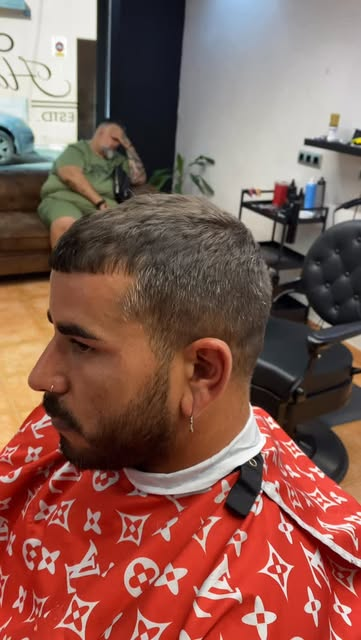
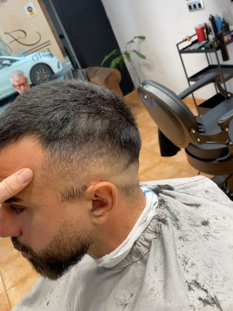
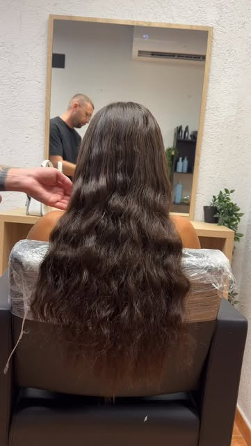
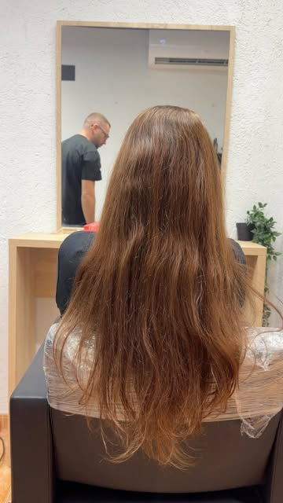
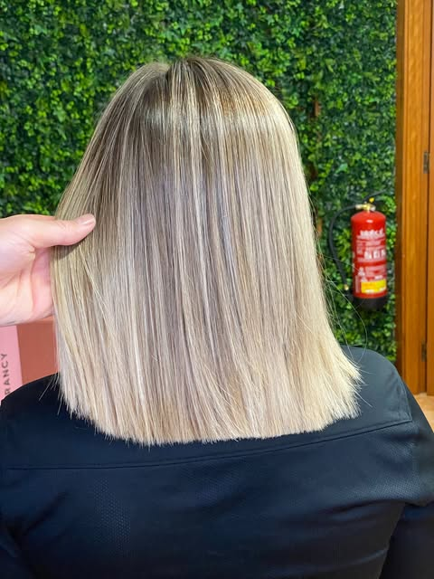

Katrina Gold Vegan
Alisado 100% orgánico sin formol, apto para todo tipo de cabello. Liso, brillante y sedoso sin dañar la estructura.
13 años creando estilo · Blanes
Expertos en rubios impecables y cortes modernos, con asesoría personalizada. Baja y aclara conmigo, nivel a nivel.
Nivel 3 · Cut'z men




Nivel 5 · Color
Nivel 7 · Balayage & babylights
Un buen rubio no es solo aclarar: es matizar. Desliza y mira cómo cambia la misma melena según el tono. Para balayage y babylights hacemos siempre un test de mecha antes del presupuesto.
Beige perla

Nivel 9 · Tratamientos
Alisado 100% orgánico sin formol, apto para todo tipo de cabello. Liso, brillante y sedoso sin dañar la estructura.
Tratamiento termoactivo que reconstruye la fibra y sella la cutícula: ideal tras decoloraciones.
Diagnóstico personalizado para pelo fino, normal o grueso. Fuerza, elasticidad y brillo inmediatos.
Nivel 10 · Platino
«Súper profesional y sabe asesorarte al detalle. ¡Me ha encantado!»Helena S.
«Fui a repasarme las raíces de la parte rubia por recomendación y lo recomiendo para cualquier cambio de look.»Sandra P.
«Mi hija y yo quedamos encantadas. Volveremos.»Reseña en Google
Dónde
Carrer d'Anselm Clavé, 29
17300 Blanes
Horario
Mar – vie 9:00–14:00 · 16:00–20:00
Sábado 9:00–17:30
Equipo
Catalin, Manel y Mounir (color)